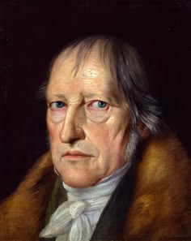

Who Was G. W. F. Hegel?
Georg Wilhelm Friedrich Hegel (1770–1831) was one of the most influential philosophers in the history of Western thought. He was a central figure in German Idealism and developed an ambitious philosophical system dealing with logic, metaphysics, knowledge, history, politics, religion, art, and the development of human freedom.
Hegel's philosophy is famous for its emphasis on development, contradiction, and change. Rather than treating philosophical concepts as permanently fixed, Hegel examined how ideas can contain tensions and internal contradictions that push thought toward more developed and comprehensive forms of understanding.
His best-known works include Phenomenology of Spirit, Science of Logic, the Encyclopaedia of the Philosophical Sciences, and Elements of the Philosophy of Right. Through these works, Hegel attempted to construct one of the most comprehensive philosophical systems ever developed.
Hegel's influence extended far beyond nineteenth-century Germany. His ideas influenced Karl Marx, existentialism, phenomenology, political philosophy, theology, critical theory, and many later traditions of Continental philosophy. Understanding Hegel remains important for understanding the development of modern philosophy itself.
G. W. F. Hegel: Quick Facts
- Full name — Georg Wilhelm Friedrich Hegel
- Born — 27 August 1770
- Died — 14 November 1831
- Nationality — German
- Philosophical tradition — German Idealism
- Major philosophical movement — Absolute Idealism
- Major subjects — Logic, metaphysics, epistemology, philosophy of history, political philosophy, aesthetics, and philosophy of religion
- Famous work — Phenomenology of Spirit
- Major work on logic — Science of Logic
- Major political work — Elements of the Philosophy of Right
- Famous concept — Dialectical development
- Major influence — Karl Marx and later Continental philosophy
Hegel's Early Life and Education

Hegel was born in Stuttgart in 1770, in the Duchy of Württemberg. His intellectual life developed during a period of enormous political and cultural transformation in Europe, including the Enlightenment, the French Revolution, and the rise of modern ideas about freedom, citizenship, and the state.
He studied theology at the Tübinger Stift, where he formed important friendships with the poet Friedrich Hölderlin and the philosopher Friedrich Wilhelm Joseph Schelling. These relationships placed Hegel at the center of the intellectual developments that would eventually produce German Idealism.
Although Hegel initially studied theology, his intellectual interests expanded into philosophy, history, politics, religion, and ancient Greek thought. He became increasingly interested in the problem of how freedom could be understood not merely as an individual desire, but as something realized through social and historical institutions.
Hegel later held important academic positions at Jena, Heidelberg, and Berlin. His years at the University of Berlin established him as one of the leading philosophers of Europe, and his lectures attracted students interested in philosophy, religion, history, politics, and the nature of modern society.
Hegel and German Idealism
Hegel belongs to the philosophical movement known as German Idealism, which developed after the work of Immanuel Kant. Other major figures in this tradition include Johann Gottlieb Fichte and Friedrich Schelling, both of whom attempted to address philosophical problems left open by Kant's critical philosophy.
Kant had argued that human knowledge is structured through the conditions of human cognition. This raised difficult questions about the relationship between the mind and reality, freedom and nature, subject and object, and the limits of philosophical knowledge.
Hegel believed that philosophy should not simply accept these divisions as permanent and absolute. His philosophical project attempted to show how apparently separate concepts could be understood through their relationships and through the historical and logical processes by which they develop.
In this sense, Hegel's philosophy is both a continuation and a transformation of Kantian philosophy. He accepted the importance of Kant's critical revolution while attempting to overcome what he saw as unresolved oppositions within the Kantian system.
What Was Hegel's Philosophy?
Hegel's philosophy was an attempt to understand reality as a dynamic and interconnected process. He rejected the idea that philosophical concepts should simply be treated as isolated definitions that remain permanently unchanged.
For Hegel, concepts often reveal limitations when they are examined carefully. A concept may appear complete at first, but deeper reflection can expose tensions within it. These tensions do not necessarily destroy thought; instead, they can lead to a more developed and comprehensive understanding.
This movement of thought is closely connected with what became known as Hegelian dialectics. Hegel used dialectical development throughout his philosophy, including his discussions of consciousness, logic, history, society, politics, and religion.
Hegel also believed that philosophy must understand reality historically. Human consciousness, social institutions, political systems, and ideas about freedom develop over time. Philosophy, therefore, should not examine human life as though history were irrelevant to the meaning of human existence.
What Is Hegel's Dialectic?
Hegel's dialectic is one of the most famous and misunderstood ideas in philosophy. In a general sense, Hegel's dialectical method examines how concepts and forms of consciousness can develop through internal tensions, contradictions, and relationships with what appears to oppose them.
Hegel did not believe that contradictions should simply be ignored. When a philosophical position generates a contradiction, this may reveal that the original position was incomplete or limited. The contradiction can therefore become part of a process through which thought moves toward a richer understanding.
Dialectical development should not be understood as a mechanical formula that can be applied identically to every subject. The form taken by the dialectic depends on what is being investigated, whether consciousness, logical categories, social institutions, or historical forms of life.
Hegel's dialectical philosophy therefore presents reality and thought as processes rather than collections of permanently isolated objects. Things become intelligible through their relations, their limits, and the processes through which they change and develop.
This approach became enormously influential. Later philosophers used dialectical methods to analyze society, politics, history, economics, and culture, with Karl Marx developing one of the most influential transformations of Hegelian dialectics.
Did Hegel Use Thesis, Antithesis, and Synthesis?
The phrase "thesis, antithesis, and synthesis" is commonly associated with Hegel, but it is an oversimplified way of describing his philosophy. It should not be treated as a universal three-step formula that Hegel repeatedly applied throughout all his philosophical works.
Hegelian dialectics is much more complex than simply beginning with a thesis, introducing its opposite, and then combining both into a synthesis. His philosophical method investigates how particular concepts generate tensions and how those tensions transform the concepts themselves.
The popular formula is partly connected with the wider tradition of German Idealism, especially discussions associated with Johann Gottlieb Fichte. Over time, simplified accounts helped create the widespread belief that "thesis-antithesis-synthesis" was Hegel's standard philosophical method.
For understanding Hegel's philosophy, it is better to focus on contradiction, negation, development, mediation, and the transformation of concepts. These ideas provide a more accurate introduction to the complexity of Hegel's dialectical thinking.
What Is Hegel's Absolute Idealism?
Absolute Idealism is the name commonly given to Hegel's mature philosophical position. The term "idealism" does not simply mean that physical reality is imaginary or that the world exists only inside an individual person's mind.
Hegel's idealism concerns the relationship between thought and reality. He attempted to overcome the idea that mind and world are permanently separated into two completely independent realms that can never be understood together.
According to Hegel, reality is intelligible because rational structures can be discovered within it. Human thought is not merely an accidental observer standing outside reality; thought itself is connected with the structures through which reality becomes intelligible.
The word "Absolute" refers to the attempt to understand reality as a whole rather than stopping with isolated perspectives. Hegel's philosophical system traces the development of logic, nature, consciousness, society, history, art, religion, and philosophy as interconnected dimensions of a comprehensive whole.
Absolute Idealism is therefore one of the most ambitious attempts in modern philosophy to construct a systematic account of reality, knowledge, freedom, and human historical development.
Hegel's Phenomenology of Spirit
Phenomenology of Spirit, published in 1807, is one of Hegel's most important and difficult works. The book traces a developmental journey through different forms of consciousness and investigates how consciousness gradually transforms its understanding of itself and the world.
The work begins with apparently immediate forms of knowledge and proceeds through increasingly complex stages. Hegel examines sense certainty, perception, understanding, self-consciousness, reason, spirit, religion, and finally a form of knowledge associated with what he calls Absolute Knowing.
A central theme is that consciousness cannot fully understand itself by treating the world as something completely external. Human consciousness develops through its practical and social relationship with other people and with the historical world.
The Phenomenology of Spirit is therefore not simply a theory about private mental experience. It is also concerned with recognition, social life, history, culture, religion, and the development of human forms of understanding.
The book became one of the foundational texts for later phenomenology, existentialism, Marxism, psychoanalysis, and twentieth-century Continental philosophy.
Hegel's Theory of Consciousness and Self-Consciousness
Hegel's philosophy of consciousness investigates how human beings come to understand both the world and themselves. Consciousness initially appears to be directed toward objects outside the self, but Hegel argues that this relationship becomes increasingly complex as consciousness reflects on its own activity.
Self-consciousness emerges when consciousness becomes aware of itself. However, Hegel argues that a person cannot achieve a complete understanding of the self in total isolation from other human beings.
This leads to one of Hegel's most influential ideas: human self-consciousness is deeply connected with recognition. People do not merely want physical survival or material possessions; they also seek acknowledgement of themselves as conscious and free beings.
Hegel's discussion of self-consciousness therefore transformed later philosophical discussions about identity, social relations, freedom, and the formation of the human self.
What Is Hegel's Master-Slave Dialectic?
The master-slave dialectic, also called the lord-bondsman dialectic, appears in Hegel's Phenomenology of Spirit. It is one of the most widely discussed sections of his philosophy and explores the relationship between self-consciousness, recognition, domination, dependence, and labor.
Hegel describes a struggle in which self-conscious beings seek recognition from one another. The relationship eventually develops into an unequal structure in which one consciousness occupies the position of master while the other occupies the position of bondsman or servant.
The relationship is paradoxical because the master receives recognition from someone who is not recognized as fully independent. The master's apparent independence therefore contains a form of dependence upon the person who performs labor and mediates the master's relationship with the material world.
The bondsman, meanwhile, develops through labor and through an active relationship with the world. Labor becomes philosophically important because transforming the world can also transform the consciousness of the person who works upon it.
Later thinkers, especially Karl Marx and twentieth-century French philosophers, gave enormous importance to this section. It became a major source for discussions of domination, labor, social conflict, recognition, and the development of human consciousness.
Hegel's Philosophy of Recognition
Recognition is one of the most important themes in Hegel's philosophy. Human beings do not develop their identities entirely alone because self-consciousness requires relationships with other self-conscious individuals.
To be recognized means, in an important philosophical sense, to be acknowledged as a person with a certain status, freedom, and capacity for self-determination. Recognition therefore connects individual identity with social relationships and institutions.
Hegel's philosophy of recognition influenced later discussions of social identity, dignity, political equality, and interpersonal relationships. Modern philosophers continue to use Hegelian ideas when examining struggles for recognition within social and political life.
Recognition also helps explain why Hegel does not understand freedom as simple isolation from other people. Genuine freedom requires forms of social life in which individuals can recognize one another as free participants in a shared ethical and political world.
What Does Hegel Mean by Spirit?
The word Spirit, translated from the German Geist, is central to Hegel's philosophy. The term does not refer only to an individual soul or supernatural being; it has a much broader philosophical meaning.
Spirit can refer to the shared forms of consciousness expressed in human culture, institutions, history, art, religion, and philosophy. Human beings create a social world that, in turn, shapes the way they understand themselves.
Hegel's philosophy of Spirit therefore examines the development of individual consciousness alongside the development of collective human life. Language, law, political institutions, cultural practices, and historical traditions all become important expressions of Spirit.
This idea helps explain why Hegel believed philosophy could not understand human beings simply as isolated individuals. Human consciousness develops within historical communities and social structures.
What Is Hegel's Absolute Spirit?
Absolute Spirit represents one of the highest stages in Hegel's philosophical system. It concerns forms through which human beings attempt to understand reality and themselves in a comprehensive way.
Hegel associates Absolute Spirit particularly with art, religion, and philosophy. These activities represent different ways through which human consciousness expresses and comprehends fundamental truths about reality and human existence.
Art presents meaning through sensuous and imaginative forms. Religion presents truth through representations, symbols, and religious narratives. Philosophy, according to Hegel, attempts to comprehend these truths through conceptual thought.
Absolute Spirit should not therefore be understood merely as a supernatural entity floating outside history. It belongs to Hegel's broader attempt to explain how human consciousness develops toward increasingly comprehensive forms of self-understanding.
Hegel's Science of Logic
Science of Logic is one of Hegel's most difficult and systematic works. In it, he investigates the fundamental categories through which reality and thought become intelligible, attempting to show how concepts develop through their own internal relationships.
Hegel's logic is not simply a collection of rules for constructing valid arguments. It is also a metaphysical investigation into the structures of being, essence, and the Concept, or Begriff.
The work is traditionally divided into major sections dealing with Being, Essence, and the Concept. Hegel examines how apparently simple categories become more complex when their limitations and relationships are analyzed.
This explains why Hegel's logic is closely connected with his metaphysics. For Hegel, examining the movement of fundamental concepts is also a way of investigating the intelligible structures of reality itself.
The Science of Logic remains one of the central works for understanding Hegelian dialectics and his attempt to construct a comprehensive philosophical system.
Hegel: Being, Nothing, and Becoming
One of the most famous discussions in Hegel's Science of Logic concerns the concepts of Being, Nothing, and Becoming. Hegel begins with the attempt to think pure Being in its most completely indeterminate form.
Pure Being, however, contains no specific characteristics by which it can be distinguished. When thought tries to grasp such completely indeterminate Being, Hegel argues that it becomes difficult to distinguish it from Nothing.
Rather than treating this as the final destruction of thought, Hegel argues that the movement between Being and Nothing leads to the concept of Becoming. Becoming expresses the process through which the two cannot be understood as permanently isolated.
This example illustrates an important feature of Hegelian dialectics: concepts that initially appear completely opposed may reveal a deeper relationship when examined through philosophical analysis.
Hegel's Philosophy of Negation and Contradiction
Negation plays a central role in Hegel's philosophy. Development often occurs because a particular form of thought encounters its own limitations and becomes transformed through confrontation with what it excludes or opposes.
Hegel does not treat negation as merely destructive. A negation can reveal the inadequacy of an earlier position while also preserving important aspects of it within a more developed form of understanding.
This complex process is associated with the German concept Aufhebung, often translated as "sublation." The term can involve meanings such as cancelling, preserving, and raising to a new level at the same time.
Hegelian development is therefore not a simple process in which old ideas disappear completely. Earlier stages can remain important within later and more comprehensive forms, even though their meaning and position have changed.
Hegel's Philosophy of History
Hegel's philosophy of history is among his most influential and controversial ideas. Hegel argued that history is not simply a random sequence of unrelated events but can be understood as involving the development of human consciousness and freedom.
Different historical societies express different understandings of freedom. Political and social institutions reveal what a particular historical community understands about the relationship between the individual, society, authority, and human self-determination.
Hegel is therefore famous for the idea that history has a rational dimension. This does not mean that every historical event is morally good or that suffering can simply be justified. Rather, Hegel attempted to understand historical development as an intelligible process rather than meaningless chaos.
His historical philosophy gave enormous importance to conflict, transformation, and the emergence of new social forms. Old institutions can contain contradictions that eventually contribute to historical change.
Hegel's philosophy of history strongly influenced Karl Marx, although Marx rejected Hegel's idealism and developed a materialist account centered more directly on economic structures and class conflict.
What Was Hegel's Philosophy of Freedom?
Freedom is one of the central concepts of Hegel's entire philosophical system. Hegel did not understand freedom merely as the ability to do whatever one personally desires without interference.
A person may possess unlimited choices and still remain dependent on impulses, ignorance, poverty, or social conditions that prevent genuine self-determination. For Hegel, freedom involves becoming able to participate rationally in a world that recognizes human agency.
Hegel therefore connected freedom with social and political institutions. Law, ethical life, family relationships, civil society, and the state can provide structures within which individuals exercise and recognize freedom.
This makes Hegel's philosophy of freedom fundamentally social. Individual liberty and social institutions are not necessarily opposites; Hegel attempted to explain how properly developed institutions could make freedom more concrete and real.
His theory remains important in modern political philosophy because it challenges purely individualistic definitions of freedom and asks what social conditions are necessary for human beings to become genuinely self-determining.
Hegel's Political Philosophy
Hegel's political philosophy is most systematically presented in Elements of the Philosophy of Right. The work examines property, law, morality, ethical life, civil society, and the political state.
Hegel rejected the idea that society should be understood only as a collection of isolated individuals pursuing private interests. Individuals become who they are through social relationships, institutions, laws, and shared forms of ethical life.
At the same time, Hegel did not simply argue that individuals should disappear into society. His philosophical problem was how individual freedom and social institutions could be understood together.
His political thought remains controversial because of debates about his understanding of the state and authority. Some interpreters have presented Hegel as a defender of authoritarian political power, while others emphasize his concern with constitutional institutions, legal freedom, and the social conditions necessary for individual self-realization.
Hegel: Family, Civil Society, and the State
Hegel's concept of ethical life, or Sittlichkeit, describes the way individual freedom becomes embedded within concrete social institutions. He identifies the family, civil society, and the state as major dimensions of ethical life.
The family represents a form of ethical unity based on personal relationships and mutual care. It provides an early social environment in which individuals experience belonging and responsibility.
Civil society is the sphere of economic activity, private interests, work, and social interaction. Hegel recognized that civil society produces wealth and cooperation but can also generate inequality, poverty, and conflicts between competing interests.
The state, in Hegel's philosophical system, represents the attempt to organize a more universal form of ethical and political life. The state should not simply be confused with a government or ruler; it belongs to Hegel's broader theory of law, institutions, citizenship, and collective freedom.
Hegel's Philosophy of Religion
Religion occupied an important place in Hegel's intellectual development. Although he began his formal education in theology, his mature philosophical approach attempted to understand religion through its relationship with history, consciousness, culture, and philosophy.
Hegel regarded religion as one of the major ways human beings attempt to comprehend their relationship with ultimate reality. Religious ideas express profound truths, but they do so through images, narratives, symbols, and representations.
Philosophy, according to Hegel, attempts to comprehend similar questions through conceptual thought. This does not necessarily mean that philosophy simply replaces religion; instead, Hegel examines the different forms through which human beings seek truth.
His lectures on the philosophy of religion became highly influential in modern theology and helped shape later philosophical discussions about Christianity, history, God, and the relationship between faith and reason.
Hegel's Philosophy of Art and Aesthetics
Hegel developed an important philosophy of art in his lectures on aesthetics. He understood art as a significant way through which human beings express ideas and understand aspects of spiritual and cultural life.
Art is not merely decoration or entertainment in Hegel's philosophy. It can reveal how a culture understands humanity, nature, religion, freedom, and its place within the world.
Hegel discussed the historical development of artistic forms and distinguished broad forms often described as symbolic, classical, and romantic art. These categories formed part of his larger attempt to understand cultural development historically.
His philosophy of art remains influential because it connects aesthetics with history, culture, religion, and the changing forms through which human beings express meaning.
Major Works of G. W. F. Hegel
- Phenomenology of Spirit — Hegel's major early work tracing the development of consciousness, self-consciousness, reason, Spirit, religion, and Absolute Knowing.
- Science of Logic — A systematic investigation of Being, Essence, the Concept, dialectical development, and the fundamental structures of thought.
- Encyclopaedia of the Philosophical Sciences — A systematic presentation of Hegel's philosophy of Logic, Nature, and Spirit.
- Elements of the Philosophy of Right — A major work on law, morality, ethical life, civil society, the state, and freedom.
- Lectures on the Philosophy of History — A major source for Hegel's ideas about historical development and the progress of human consciousness of freedom.
- Lectures on Aesthetics — Hegel's important discussions of art, beauty, artistic history, and cultural expression.
- Lectures on the Philosophy of Religion — An influential examination of religion, God, Christianity, and the philosophical understanding of religious consciousness.
Hegel's Main Philosophical Ideas
1. Reality Develops Through Dialectical Processes
Hegel understood philosophical concepts and forms of consciousness as dynamic rather than permanently fixed. Internal tensions can reveal the limitations of an earlier form and contribute to the development of a more comprehensive understanding.
2. Recognition Is Necessary for Self-Consciousness
Human beings develop their understanding of themselves through relationships with other people. Recognition therefore connects individual identity with social life, freedom, and mutual acknowledgement.
3. Freedom Must Become Concrete
Freedom is not merely the absence of restrictions. Hegel believed that genuine freedom requires social, legal, and political conditions in which individuals can act as recognized and self-determining participants.
4. History Has an Intelligible Development
Hegel attempted to understand history as involving the development of human consciousness and freedom. Historical conflict and transformation reveal changes in the ways societies understand themselves.
5. The Individual and Society Are Interconnected
Hegel rejected the idea that individuals can be understood entirely apart from their social world. Families, institutions, laws, culture, and political communities all contribute to the development of human identity and freedom.
6. Contradiction Can Produce Development
Contradictions are not always meaningless errors that must simply be removed. In Hegel's dialectical philosophy, contradictions can reveal the limitations of a concept and create the possibility of a more developed understanding.
Hegel and Kant: What Is the Difference?
Immanuel Kant was one of Hegel's most important philosophical predecessors. Kant transformed modern philosophy by examining the conditions and limits of human knowledge, but Hegel believed that Kant's system left several fundamental divisions unresolved.
Hegel was particularly concerned with divisions between subject and object, freedom and nature, reason and reality, and phenomena and things in themselves. He attempted to show that philosophy should investigate how such oppositions develop rather than simply accepting them as permanently fixed boundaries.
Kant emphasized the limits of theoretical knowledge, whereas Hegel attempted to construct a more comprehensive philosophical system capable of understanding the development of knowledge, reality, and history.
Despite these differences, Hegel cannot be understood without Kant. His philosophy belongs to the intellectual movement that began with Kant's critical revolution and attempted to answer the philosophical problems that revolution created.
Hegel and Karl Marx: Influence and Differences
Karl Marx was deeply influenced by Hegel, especially by Hegel's emphasis on history, contradiction, development, labor, and social relationships. However, Marx also became one of Hegel's most important critics.
Hegel's philosophy is generally described as a form of idealism because it gives a central role to thought, consciousness, and the development of Spirit. Marx argued that philosophical analysis should instead begin more directly with material conditions and economic relationships.
Marx therefore transformed the Hegelian dialectic into what became known as dialectical materialism in later Marxist traditions. Historical development was interpreted increasingly through production, class relations, economic structures, and material conflict.
The relationship between Hegel and Marx demonstrates Hegel's enormous influence. Even when Marx rejected important aspects of Hegel's idealism, he continued to develop philosophical ideas shaped by the Hegelian understanding of contradiction and historical development.
What Is Hegelian Philosophy?
Hegelian philosophy refers broadly to philosophical approaches influenced by Hegel's ideas about dialectics, history, freedom, recognition, logic, and the relationship between the individual and society.
After Hegel's death, his followers developed in different directions. The Young Hegelians often used Hegelian ideas to criticize religion and existing political institutions, while other interpreters developed more conservative readings of his philosophy.
Hegelian ideas later influenced Marxism, existentialism, phenomenology, critical theory, hermeneutics, theology, and contemporary political philosophy.
This diversity shows that Hegel's philosophical system can be interpreted in many different ways. His ideas continue to generate disagreement precisely because they address some of the largest questions about history, freedom, consciousness, society, and reality.
Hegel's Influence and Legacy
Hegel's influence on the history of philosophy is enormous. During the nineteenth century, his philosophy shaped debates about politics, religion, history, culture, and the nature of modern society.
Karl Marx transformed Hegelian ideas into a materialist theory of historical development. Later thinkers in phenomenology and existentialism also engaged with Hegel's discussions of consciousness, self-consciousness, and recognition.
Twentieth-century critical theorists associated with the Frankfurt School drew upon Hegelian themes when examining society, domination, reason, and historical development. Hegel also influenced modern discussions of recognition and social freedom.
Today, Hegel remains one of the central figures of Continental philosophy and modern political theory. His writings continue to influence debates about identity, history, freedom, social institutions, and the relationship between thought and reality.
Whether philosophers agree with Hegel or strongly reject him, his system remains difficult to ignore. Much of modern and contemporary philosophy developed partly through attempts either to continue, transform, or criticize Hegelian thought.
Criticisms of Hegel's Philosophy
Hegel's philosophy has received significant criticism from many traditions. One common criticism concerns the extraordinary complexity of his writing, which can make it difficult to determine precisely how particular arguments should be interpreted.
Some philosophers reject Hegel's attempt to construct a comprehensive philosophical system. Critics argue that reality and human experience may be too diverse and unpredictable to be captured within a single systematic account.
Others have criticized aspects of Hegel's philosophy of history, especially interpretations that appear to present historical development as moving toward a predetermined goal. Such interpretations raise difficult questions about contingency, suffering, and historical progress.
Nevertheless, Hegel's critics have often remained deeply influenced by him. Marx, Kierkegaard, Nietzsche, and many later philosophers developed their own ideas partly through critical engagement with the philosophical problems Hegel raised.
Hegel's Philosophy Explained Simply
Hegel's philosophy can be difficult, but its central ideas can be understood through a simple starting point: people, ideas, and societies do not remain exactly the same forever. They develop through relationships, conflicts, contradictions, and historical change.
- Why do ideas change? Ideas can reveal internal problems and limitations that require a more developed understanding.
- How do people understand themselves? Self-consciousness develops partly through relationships with other people and through the need for recognition.
- What is freedom? Freedom is more than doing whatever one wants; it requires social conditions in which individuals can act as genuinely self-determining persons.
- Does history have meaning? Hegel believed history could be understood as involving the development of human consciousness and changing forms of freedom.
- What is the dialectic? Dialectical thinking examines how tensions and contradictions can lead concepts and forms of life toward transformation and development.
- What is Absolute Idealism? It is Hegel's attempt to understand reality, thought, history, and Spirit as interconnected rather than permanently separated.
Why Is Hegel Important in the History of Philosophy?
Hegel is important because he developed one of the most ambitious philosophical systems in modern history. His work attempted to connect logic, metaphysics, consciousness, society, politics, history, art, religion, and philosophy within a single intellectual framework.
His dialectical method changed the way many philosophers understood contradiction and development. Instead of treating reality as a collection of fixed objects, Hegel emphasized process, transformation, relationship, and historical movement.
Hegel also transformed philosophical discussions of freedom. His theory connected individual liberty with recognition, law, social institutions, and political life, creating an alternative to purely individualistic accounts of human freedom.
His influence on Karl Marx alone would make him historically significant, but his impact extends far beyond Marxism. Hegel helped shape phenomenology, existentialism, political philosophy, critical theory, theology, and modern Continental thought.
For these reasons, learning about Hegel provides an important foundation for understanding the history of nineteenth- and twentieth-century philosophy and many of the intellectual debates that continue today.
Frequently Asked Questions About Hegel
Who was G. W. F. Hegel?
G. W. F. Hegel was a German philosopher who lived from 1770 to 1831. He was a major figure in German Idealism and developed influential theories about dialectics, consciousness, history, freedom, politics, logic, and Absolute Idealism.
What is Hegel famous for?
Hegel is famous for his dialectical philosophy, Absolute Idealism, Phenomenology of Spirit, the master-slave dialectic, his philosophy of history, and his major influence on Karl Marx and later Continental philosophy.
What was Hegel's philosophy?
Hegel's philosophy attempted to understand reality as a dynamic and interconnected process. His system investigates how consciousness, concepts, social institutions, and historical forms develop through relationships, tensions, contradictions, and transformation.
What is Hegel's dialectic?
Hegel's dialectic is a philosophical method that examines how concepts and forms of consciousness can develop through internal tensions and contradictions. The process leads from less adequate forms of understanding toward more developed ones.
Did Hegel use thesis, antithesis, and synthesis?
The phrase is commonly associated with Hegel, but it is an oversimplification of his philosophy. Hegelian dialectics should not be understood as a mechanical formula that is repeatedly applied in exactly the same thesis-antithesis-synthesis pattern.
What is Hegel's Absolute Idealism?
Absolute Idealism is Hegel's attempt to understand thought and reality as fundamentally interconnected. It seeks a comprehensive philosophical understanding of logic, nature, consciousness, society, history, art, religion, and philosophy.
What is the Phenomenology of Spirit?
Phenomenology of Spirit is Hegel's major work on the development of consciousness. It traces different forms of human understanding, including consciousness, self-consciousness, reason, Spirit, religion, and Absolute Knowing.
What is Hegel's master-slave dialectic?
The master-slave dialectic is Hegel's famous discussion of recognition, domination, dependence, and labor. It explores how unequal relationships can transform both the apparently independent master and the dependent bondsman.
What did Hegel mean by recognition?
Recognition refers to the idea that human self-consciousness develops through relationships with other self-conscious individuals. People seek acknowledgement as free and conscious persons rather than developing their identities entirely in isolation.
What was Hegel's philosophy of history?
Hegel believed that history could be understood as involving the development of human consciousness and freedom. Different societies and historical periods express different understandings of political and social freedom.
What did Hegel believe about freedom?
Hegel believed that genuine freedom is more than unrestricted personal choice. Freedom becomes concrete through recognition, law, ethical relationships, social institutions, and political participation.
What is Hegel's Science of Logic?
Science of Logic is Hegel's major work on the development of fundamental philosophical categories. It investigates Being, Essence, the Concept, contradiction, negation, and the dialectical movement of thought.
What did Hegel mean by Being, Nothing, and Becoming?
Hegel argued that completely indeterminate Being cannot be understood as entirely separate from Nothing. Their relationship leads to the concept of Becoming, illustrating how apparently opposed concepts can reveal a deeper philosophical connection.
How did Hegel influence Karl Marx?
Marx was strongly influenced by Hegel's dialectical understanding of history and contradiction. Marx rejected Hegel's idealism and developed a more materialist approach focused on economic structures, production, and class conflict.
What is Hegelian philosophy?
Hegelian philosophy refers to philosophical approaches influenced by Hegel's ideas about dialectics, recognition, history, freedom, logic, and the relationship between individuals and social institutions.
Why is Hegel difficult to understand?
Hegel's writing is difficult because his philosophical system uses specialized terminology and attempts to trace complex processes of conceptual development. His ideas are also frequently simplified in ways that can make the original philosophy harder to understand.
Why is Hegel important today?
Hegel remains important because his ideas continue to influence debates about identity, recognition, social freedom, history, political institutions, inequality, and the relationship between individual consciousness and society.
Related Modern and Enlightenment Philosophers
Explore other major philosophers connected with German Idealism, Enlightenment philosophy, modern metaphysics, existentialism, and the development of modern political and social thought.
Related Areas of Philosophy
Hegel's philosophy connects metaphysics, epistemology, logic, philosophy of mind, political philosophy, philosophy of history, ethics, aesthetics, and the wider tradition of German Idealism.
Why Hegel Still Matters
G. W. F. Hegel remains one of the most important philosophers for understanding modern ideas about history, freedom, consciousness, and society. His philosophy challenged the assumption that human beings, ideas, and institutions can be understood as permanently fixed and isolated realities.
His dialectical approach emphasized development, contradiction, and transformation. His philosophy of recognition demonstrated that human identity is deeply connected with social relationships, while his political philosophy examined how freedom can become concrete through institutions and ethical life.
Hegel's influence can be seen in Karl Marx, phenomenology, existentialism, critical theory, political philosophy, theology, and contemporary discussions of recognition and social freedom. Few philosophers have shaped the development of modern thought so extensively.
Understanding Hegel helps reveal why philosophy cannot always be reduced to simple answers. His work asks us to examine how ideas develop, how contradictions transform understanding, and how human freedom emerges within the changing historical world.
Explore Great Philosophers